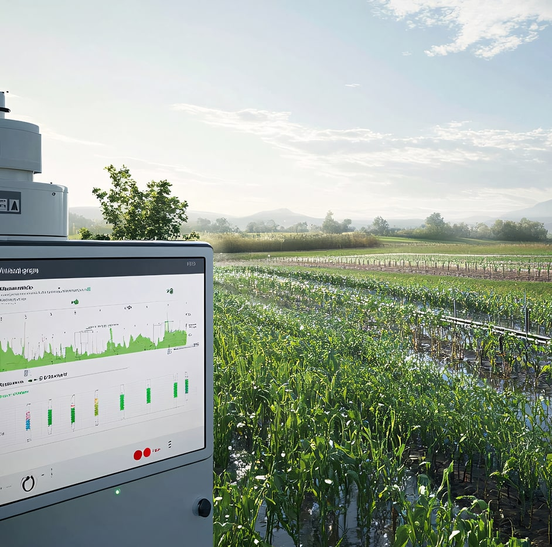
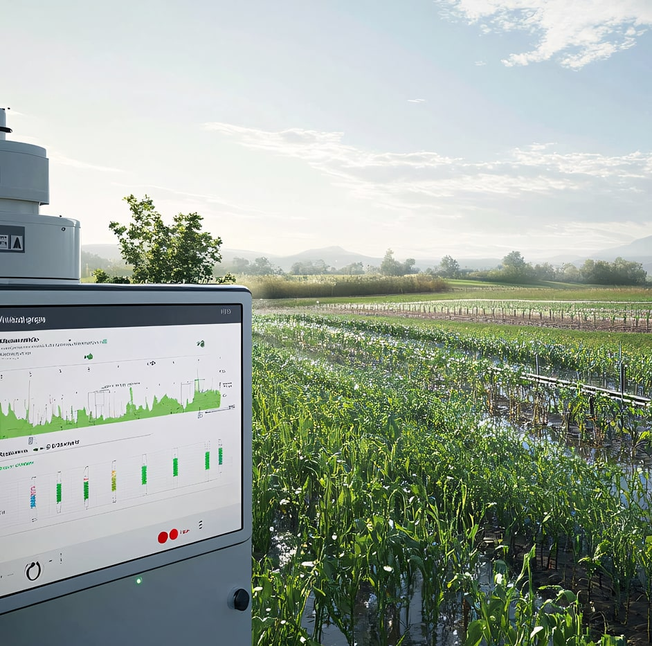

IoT Solutions for Manufacturing & Beyond
 

Predictive Maintenance
Reduce downtime by using sensor data & analytics to detect anomalies before they escalate.
Remote Monitoring
Gain real-time visibility of assets from anywhere. Automate key workflows to boost efficiency.
Analytics & Reporting
Transform raw IoT data into actionable insights with dashboards tailored to your KPIs.
Energy Optimization
Track & minimize energy usage. Ideal for manufacturing plants or F&B producers with large machinery.
Some Important Facts
Industrial IoT (IIoT) investments can yield significant results and ROI through improved efficiency, reduced costs, enhanced data-driven decision-making, and competitive advantages